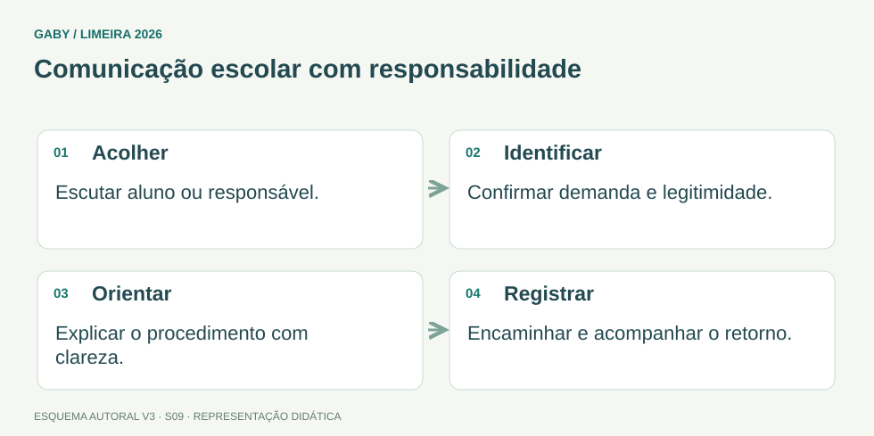

Objetivos do módulo
- Atender público interno e externo com clareza, respeito e eficiência.
- Aplicar escuta ativa e comunicação objetiva em situações escolares.
- Saber registrar recados, solicitações e encaminhamentos.
- Lidar com atendimento presencial e telefônico sem expor dados indevidamente.
Comunicação escolar com responsabilidade

Descrição em texto do esquema
- Acolher: Escutar aluno ou responsável.
- Identificar: Confirmar demanda e legitimidade.
- Orientar: Explicar o procedimento com clareza.
- Registrar: Encaminhar e acompanhar o retorno.
Oficina visual · aplique o esquema
Uma pessoa liga pedindo notas e endereço de um aluno, sem se identificar. Qual é uma conduta adequada?
Atividade autoral complementar da V3. Registre sua resposta; a resolução está no arquivo de gabarito e revisão.
Mapa do conteúdo
1. Qualidade no atendimento
Atendimento de qualidade combina cortesia, precisão, agilidade possível e respeito às normas. Ser cordial não significa prometer o que não pode ser cumprido; ser eficiente não significa pular controles.
O objetivo é compreender a demanda, fornecer informação correta ou encaminhar ao responsável competente e deixar registro quando necessário.
2. Escuta ativa e clareza
Escuta ativa exige atenção à fala do usuário, confirmação do que foi entendido e perguntas objetivas quando a solicitação estiver ambígua. Evite interromper, ironizar ou usar jargão interno sem explicação.
Uma técnica simples é repetir a demanda em forma de confirmação: “Então, a senhora precisa da segunda via do histórico para matrícula em outra instituição, correto?”
3. Atendimento telefônico
Ao telefone, identifique a unidade e, conforme padrão institucional, o atendente. Registre nome, contato, assunto e destinatário do recado quando necessário.
Não revele dados pessoais apenas porque a pessoa diz ser parente. Confirme identidade e legitimidade conforme regras da escola antes de fornecer informação protegida.
4. Situações de conflito
Usuários podem chegar irritados. O servidor deve manter linguagem profissional, separar emoção do problema administrativo e apresentar caminhos objetivos. Se houver agressão, ameaça ou situação fora de sua competência, aplique os procedimentos da instituição e acione responsável/suporte adequado.
Discutir, elevar o tom ou responder com sarcasmo tende a agravar a situação.
5. Encaminhamento e registro
Quando a demanda não puder ser resolvida imediatamente, informe qual será o próximo passo, setor responsável e prazo apenas se houver previsão confiável. Registre solicitações relevantes para que não dependam da memória do atendente.
Exemplos resolvidos passo a passo
Exemplo 1
Situação: Responsável pergunta por telefone a nota de outro aluno alegando ser amigo da família.
Exemplo 2
Situação: Usuário irritado diz que “ninguém resolve nada”.
Exemplo 3
Situação: Recado: “João ligou, resolver aquele negócio”.
Pegadinhas e erros frequentes
- Prometer prazo sem confirmação.
- Usar siglas internas sem explicar.
- Fornecer dados pessoais pelo telefone sem verificar legitimidade.
- Responder agressividade com agressividade.
- Registrar recados vagos.
Resumo de prova
- Atendimento = escutar, compreender, informar/encaminhar e registrar.
- Cortesia não elimina regras.
- Telefone exige identificação e cuidado com dados.
- Conflito deve ser tratado com profissionalismo.
- Recado precisa ser útil e rastreável.
Exercícios do módulo
Resolva sem consultar o arquivo de gabarito. As questões são autorais e construídas para treinar os conceitos do edital.
- usar jargões
- prometer solução imediata
- ouvir, confirmar entendimento e esclarecer dúvidas
- interromper para acelerar
Fonte: referência de estudo.
- ignorar o usuário
- orientar e encaminhar corretamente
- inventar resposta
- garantir decisão
Fonte: referência de estudo.
- não devem ser fornecidos sem verificação de legitimidade e regras aplicáveis
- devem ser informados a qualquer pessoa
- são sempre públicos
- podem ser divulgados se o solicitante insistir
Fonte: referência de estudo.
- somente “ligou para você”
- opiniões do atendente
- dados irrelevantes
- informações suficientes para identificar remetente, assunto e destinatário
Fonte: referência de estudo.
- ironizar
- encerrar sem ouvir
- manter postura profissional e focar na demanda
- elevar o tom
Fonte: referência de estudo.
- atender somente casos fáceis
- resolver/encaminhar corretamente com uso adequado de tempo e recursos
- ignorar controles
- prometer tudo
Fonte: referência de estudo.
- não deve inventar prazo
- deve escolher uma data qualquer
- deve garantir resposta no mesmo dia
- pode omitir que não sabe
Fonte: referência de estudo.
- são sempre obrigatórios
- provam eficiência
- substituem orientação
- devem ser explicados ou evitados quando prejudicam compreensão
Fonte: referência de estudo.
- não integra serviço público
- permite informação imprecisa
- também exige respeito, clareza e cooperação
- dispensa cordialidade
Fonte: referência de estudo.
- evitar qualquer orientação
- confirmar o próximo passo e responsável
- deixar tudo implícito
- apagar registros
Fonte: referência de estudo.
Quando terminar, abra Secretário de Escola 09 - Atendimento ao Público e Comunicação Escolar - Gabarito e Revisão.
Checklist de domínio
- ☐ Atender público interno e externo com clareza, respeito e eficiência.
- ☐ Aplicar escuta ativa e comunicação objetiva em situações escolares.
- ☐ Saber registrar recados, solicitações e encaminhamentos.
- ☐ Lidar com atendimento presencial e telefônico sem expor dados indevidamente.
Meta do módulo: 80% ou mais nas questões, sem depender de consulta.
Referências e conteúdos auxiliares
- Brasil — Lei 8.069/1990, ECA, texto compiladoProteção integral e direitos da criança e do adolescente. Leia o intervalo exigido no programa.
- Brasil — Lei 13.709/2018, LGPD, texto compiladoPrincípios de finalidade e necessidade, proteção de dados e tratamento pelo poder público.
- Brasil — Lei 13.460/2017, direitos do usuário de serviços públicosParticipação, proteção e defesa dos direitos do usuário dos serviços públicos.
Referências externas de apoio consultadas para a V3 em 27/09/2026. A origem das questões é o material autoral do projeto; estes links não indicam que uma instituição publicou ou validou os exercícios. As páginas externas precisam de internet. Em informática, confira a versão do programa; em legislação, observe o recorte e as regras de atualização do edital.